Sortwick: 물건 정리 퍼즐선반을 정리하고, 마을을 되살려요.
선반을 정리하고, 세 개를 맞추고, 바닷가 마을을 되살려요. 그곳에 사는 사람들도 만나 보세요.
iPhone에서 무료 · 오프라인 플레이 · 계정 불필요

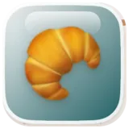


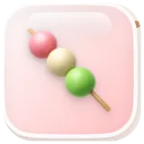

Sortwick은 어떤 게임인가요?
Sortwick은 iPhone과 iPad에서 즐기는 무료 상품 정리 퍼즐이에요. 선반 사이로 물건을 옮기고, 같은 물건 세 개를 모아 지우고, 모은 별로 작은 바닷가 마을 솔트윅을 복원해요. 정리하는 재미와 제대로 된 도전을 좋아하는 어른을 위한 아늑한 정리 게임으로, 트리플 매치 규칙에 수백 개의 레벨이 있고 오프라인으로도 플레이할 수 있어요.
- iPhone에서 무료
- iOS 17 이상
- 오프라인 플레이
- 9개 언어
- 계정 불필요
10초 만에 보는 플레이 방법
선반 사이로 물건을 옮기고 같은 물건 세 개를 모아 지워요. 모든 레벨에는 반드시 풀이가 있고, 이길 때마다 별을 받아요. 그 별로 등대, 카페, 가로등까지 솔트윅 마을을 하나씩 복원해요.
물건을 탭하고, 선반을 탭해요
빈자리가 있는 선반으로 물건을 하나씩 옮겨요.
같은 세 개는 사라져요
같은 물건 세 개가 모이면 선반에서 사라져요.
별을 모아 솔트윅을 복원해요
레벨을 깰 때마다 마을의 다음 장소를 고칠 별을 받아요.
게임 속 살펴보기
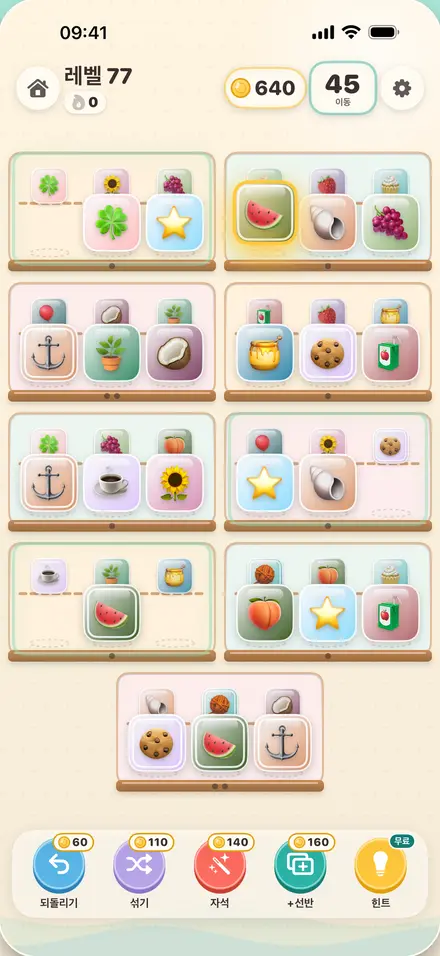
세 개를 모아 선반을 비워요 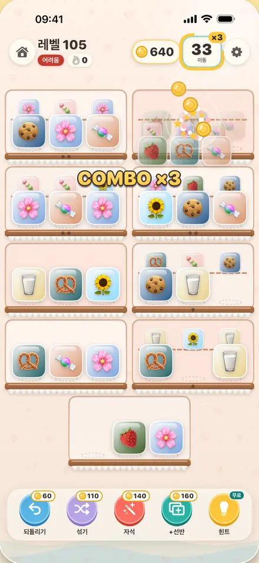
연속 클리어로 콤보 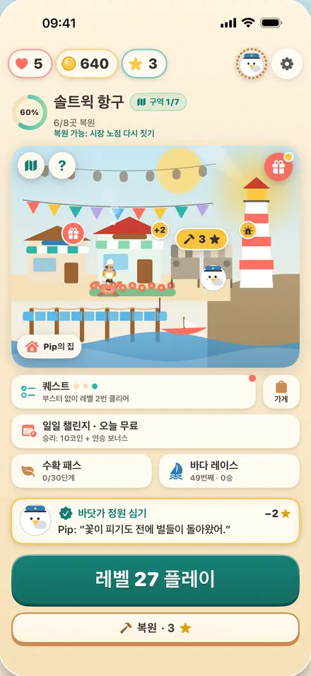
말을 걸어오는 마을 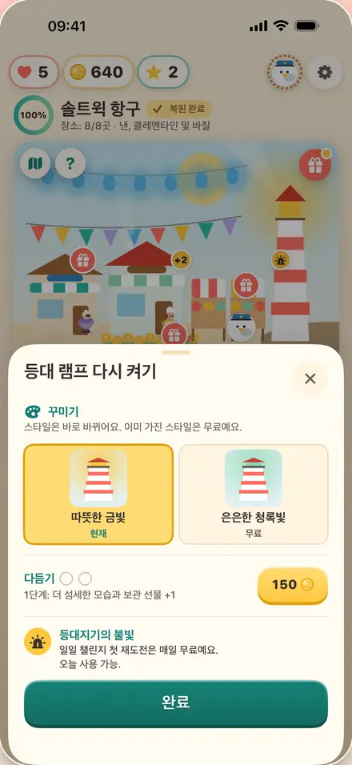
장소마다 내 맘대로 꾸미기 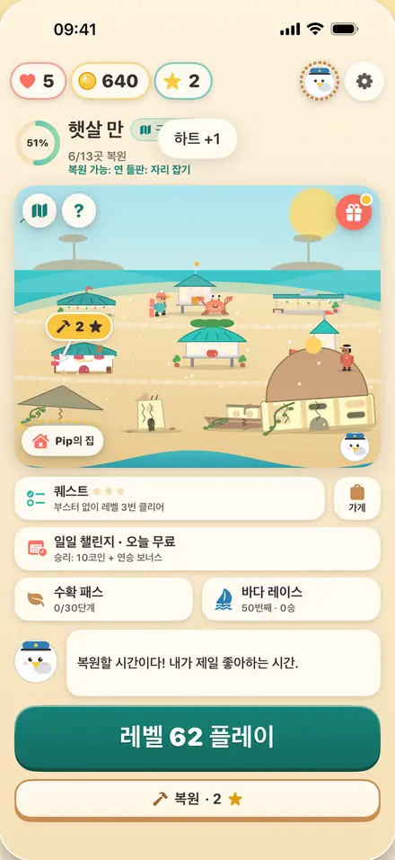
복원한 장소에서 선물이 와요 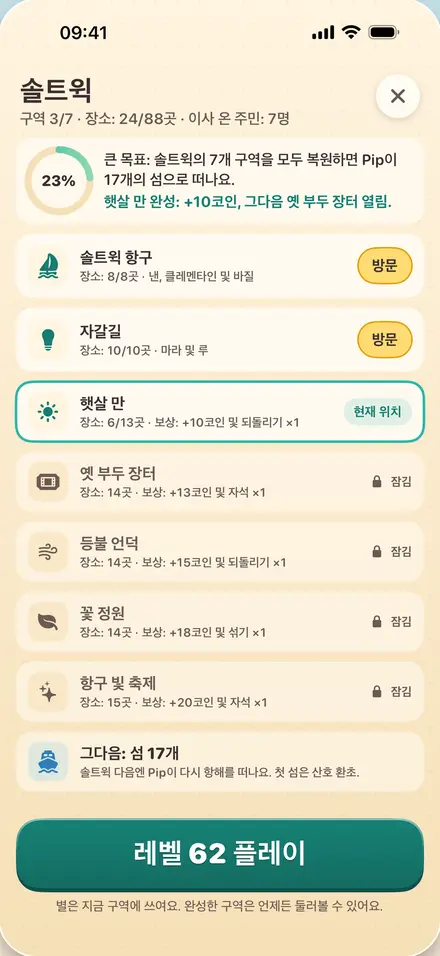
되살릴 구역이 일곱 곳 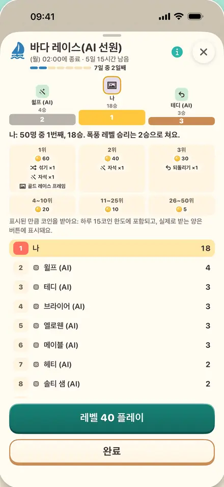
매주 레이스에서 1등을 노려요
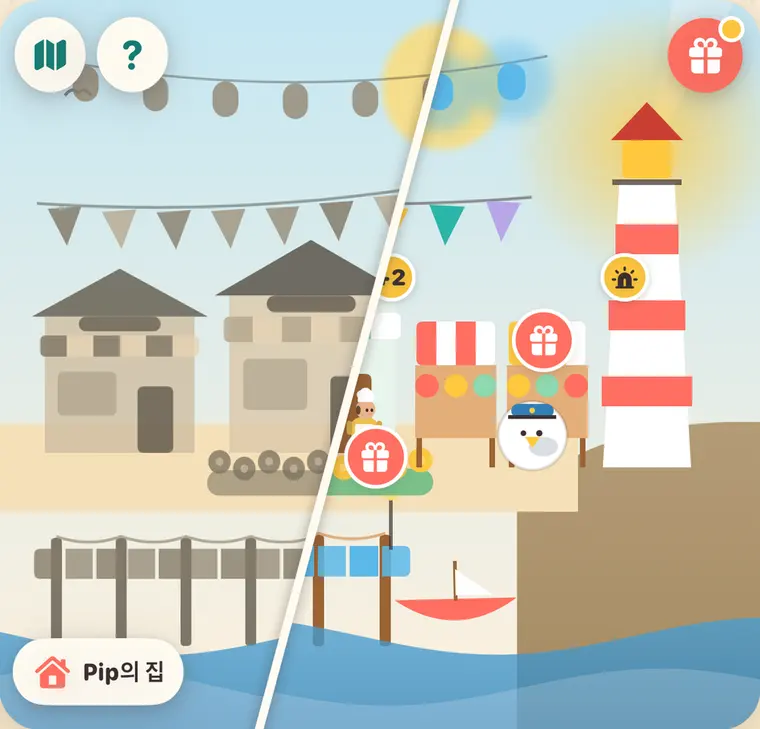
말을 걸어오는 마을
별을 모아 Saltwick을 재건
- 솔트윅 항구부터 항구 빛 축제까지 7개 구역, 그다음엔 섬들로
- 낸, 바질, 클레멘타인, 마라 같은 주민들은 집이 고쳐지면 바로 이사 와요. 산책로를 거닐고, 탭하면 한마디 건네요
- 복원할 때마다 짧은 대화가 이어져요. 주민이 말하면 항구 갈매기 Pip이 대답해요
- 빵집과 등대는 실제로 쓸모가 있어요. "바질의 아침 식사"는 그날 첫 레벨에 이동 2회를 더해 주고, 등대지기는 일일 챌린지의 첫 재도전을 대신 내 줘요
마을 주민을 만나 보세요
Pip
항구 갈매기 Pip이 솔트윅에서 여러분을 맞이하고, 누구에게나 대답해 줘요.

Nan
Nan은 항구의 자기 자리가 복원되면 돌아와요. 언제나 한마디 건네줘요.

Clementine
산책로를 거니는 게 Clementine. 탭하면 대답해 줘요.
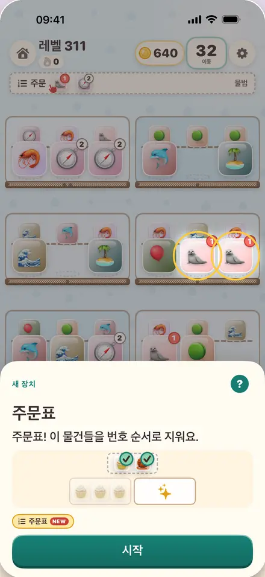
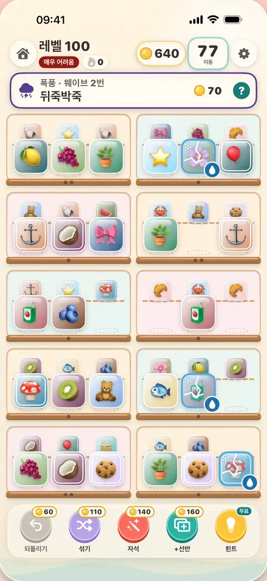
새로운 장치를 하나씩
- 금 간 선반, 투입구, 회전대, 카운터, 눈보라, 주문표가 얼음, 자물쇠, 선물, 사슬, 상자, 안개, 시간 제한 레벨, 벨트에 더해져요
- 레벨 시작 시트가 첫 이동 전에 그 레벨의 물건으로 새 장치를 보여 주고, "게임 방법" 가이드에서 모든 규칙을 한 번의 탭으로 확인할 수 있어요
- 장치끼리 조합되고, 변형이 등장하고, 2교대 레벨에서는 두 번째 물건 웨이브가 밀려와요
진짜 도전
- 난이도가 정말로 올라가요. 어려움 레벨, 매우 어려움 레벨, 폭풍 레벨, 미스터리 레벨, 그리고 편안한 숨 돌리기 레벨
- 탑, 계단, 나뉜 열, 빈 선반 등 다양한 모양의 보드
- 되돌리기, 섞기, 자석 부스터는 원할 때만. 강요하지 않아요
Sortwick이 다른 점
작은 다운로드
약 27MB예요. 금방 설치되고 사진 저장 공간도 넉넉히 남아요.
오프라인 플레이
계정도 인터넷도 필요 없어요. 지하철에서도, 비행기에서도, 어디서나.
시간제한 대신 이동 횟수
레벨은 이동 횟수로 제한되니 천천히 생각할 수 있어요. 가끔 나오는 시간 제한 레벨만 시계가 돌아가요.
처음 100레벨은 강제 광고 없음
레벨 사이 광고는 일부러 드물게 했고, 패배 뒤에는 절대 나오지 않아요. 보상 영상은 언제나 직접 선택해요.
어떤 화면에도 딱 맞게
iPhone, 폴더블 폰의 넓은 안쪽 화면, iPad. 플레이하는 화면에 맞춘 레이아웃이에요.
아늑하게, 오프라인으로도
- 오프라인 플레이 가능, 계정 불필요
- 오늘의 선물, 퀘스트, 일일 챌린지, 매주 바다 레이스, 28일 시즌
- 앨범에서 카드를 모으고, 업적을 달성하고, 모은 가구로 Pip의 집을 꾸며요
- 무료 플레이. 구매해도 레벨의 풀이는 절대 바뀌지 않고, 앨범 상자는 판매하지 않아요. 확률은 항상 공개돼요
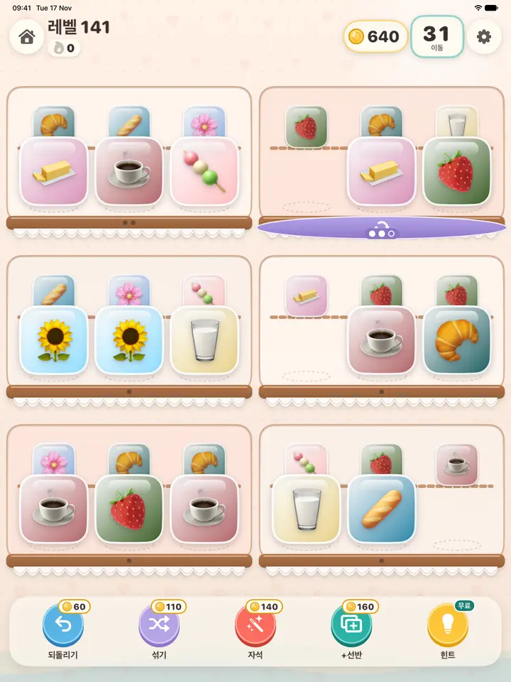
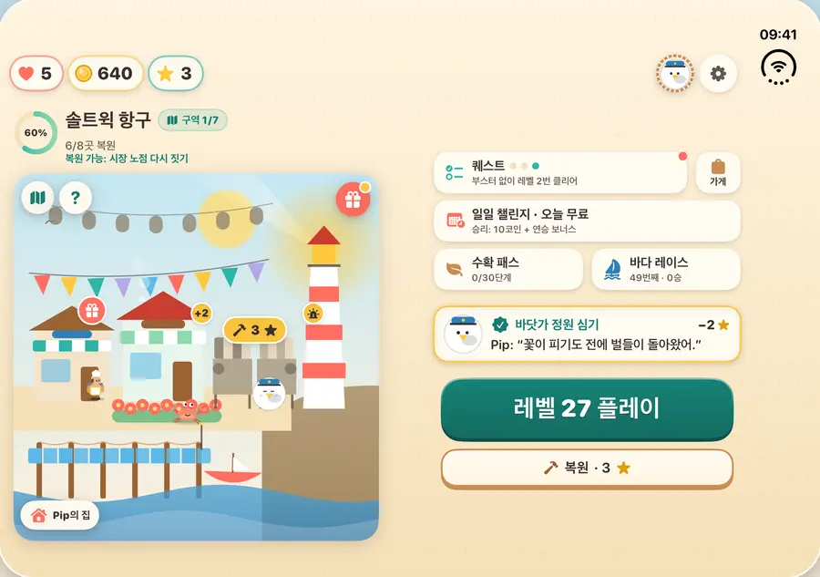
출시 예정
Android: 테스트에 참여해 주세요
Android용 Sortwick은 Google Play에서 비공개 테스트 중이며 아직 출시되지 않았어요. 테스트에 참여해 먼저 플레이하고 의견을 들려주세요.
Android 테스트 참여하기테스트 페이지는 영어로 되어 있어요.
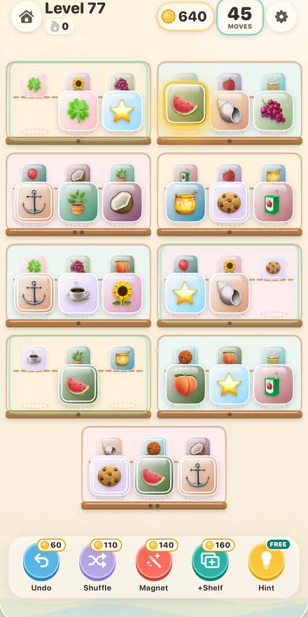
자주 묻는 질문
상품 정리 게임이란 무엇인가요?
상품 정리 게임(굿즈 소트, 트리플 매치, 상품 3매치라고도 해요)은 선반 사이로 물건을 옮겨 같은 물건 세 개를 모아 지우는 퍼즐이에요. Sortwick은 이런 정리 게임이며, 모은 별로 바닷가 마을을 복원하는 재미도 있어요.
Sortwick은 무료인가요?
네. 다운로드와 플레이 모두 무료예요. 구매는 선택 사항이고 레벨의 풀이를 바꾸지 않으며, 보상 영상도 언제나 직접 선택해요.
Sortwick은 오프라인으로 플레이할 수 있나요?
네. 레벨, 마을, 진행 상황은 인터넷과 계정 없이도 작동해요. 순위표, 구매, 보상 영상 같은 부가 기능만 인터넷 연결이 필요해요.
강제 광고 없는 정리 게임이 있나요?
Sortwick에서는 처음 100레벨 동안 광고가 플레이를 끊지 않고, 패배 뒤에는 절대 나오지 않아요. 그 뒤로도 레벨 사이 광고는 일부러 드물게 했고, "광고 제거"를 한 번 구매하면 완전히 사라져요.
다른 상품 정리 게임과 무엇이 다른가요?
레벨은 시간제한이 아니라 이동 횟수로 제한되고(가끔 나오는 시간 제한 레벨만 시계가 돌아가요), 모든 레벨에는 반드시 풀이가 있어요. 여기에 주민이 대답해 주는 마을, 약 27MB의 작은 다운로드, 오프라인 플레이가 더해져요.
하트는 어떻게 작동하나요?
레벨에 실패하면 하트를 하나 잃어요(처음 레벨들은 무료로 다시 할 수 있어요). 하트는 시간이 지나면 저절로 다시 채워져요. 하트가 다 떨어지면 무료 영상을 보고 하나를 돌려받을 수 있고, 상점에서 코인으로 채울 수도 있어요. 항구 VIP는 하트를 하나 더 늘려 주며, 스타터 팩에는 1시간 무제한 하트가 들어 있어요.
광고가 있나요?
처음 레벨들에는 광고가 전혀 없어요. 그 뒤로도 보상 영상(하트 1개, 이동 몇 회 추가, 무료 부스터)은 언제나 직접 선택하는 것이에요. 레벨 사이 광고는 일부러 드물게 했어요. 처음 100레벨 동안은 나오지 않고, 패배 뒤에는 절대 나오지 않아요. "광고 제거"(1회 구매), 항구 VIP, 또는 최근 구매가 있으면 이 광고는 꺼지며, 선택형 영상은 그대로 남아요. 레벨 1 직후 게임이 광고 동의(EEA, 영국, 스위스)와 광고 식별자 사용 허용 여부를 물어요. 거부해도 광고가 맞춤형이 아니게 될 뿐이에요.
무엇을 살 수 있나요?
모두 선택 사항이에요. 500, 1,400, 3,100, 8,500코인 팩; 900코인, 부스터 6개, 1시간 무제한 하트가 든 1회성 스타터 팩; 월간 구독인 항구 VIP는 매일 60코인, 주간 보물함, 하트 최대치 +1, 레벨 사이 광고 없음; 28일 시즌의 수확 패스 프리미엄; 그리고 "광고 제거". 가격은 모든 구매 버튼 옆에 App Store 통화로 표시되고, 결제 전에 Apple이 확인을 요청해요. 코인은 계속하기, 하트, 부스터에 쓰이며 레벨의 풀이를 바꾸지 않아요. 설정에서 하루 구매 한도를 정할 수 있어요.
구매 복원이나 항구 VIP 해지는 어떻게 하나요?
게임의 상점을 열고 구매할 때 쓴 Apple 계정으로 로그인한 채 "구입 항목 복원"을 탭하세요. 항구 VIP는 iOS 설정 > 내 이름 > 구독에서 갱신일 24시간 전까지 해지하지 않으면 매달 갱신돼요. 환불은 Apple이 처리해요.
Game Center를 사용하나요?
네, 로그인되어 있을 때만요. 일일 챌린지 점수와 주간 바다 레이스 승리 수가 두 개의 순위표에 올라가고, 91개의 업적이 진행 상황을 기록해요. 로그아웃 상태에서는 아무것도 보내지 않고 게임은 똑같이 플레이돼요. 자체 로그인 화면은 절대 띄우지 않아요.
어떤 데이터를 수집하나요?
개인 정보는 수집하지 않아요. 계정이 없고, 여러분의 데이터를 받는 자체 서버도 없어요. 게임 밸런스를 맞추기 위해 개인 정보가 없는 익명 플레이 통계를 보내며, 설정에서 끌 수 있어요. 진행 상황은 iPhone에 저장되고, iCloud를 쓰면 본인의 iCloud 계정에도 저장돼요. 광고는 Google AdMob이 제공하며 일반적인 광고 데이터를 받고, 맞춤 광고는 허용했을 때만 이루어져요. Game Center 점수와 구매는 Apple이 처리해요. 자세한 내용은 개인정보 처리방침에 있어요.
지원 기기와 언어는?
iOS 17 이상의 iPhone과 iPad. 한국어, 영어, 독일어, 프랑스어, 스페인어, 이탈리아어, 포르투갈어(브라질), 루마니아어, 일본어 지원.
선반을 정리할 준비 되셨나요?
App Store에서 무료. Pip이 항구에서 기다리고 있어요.